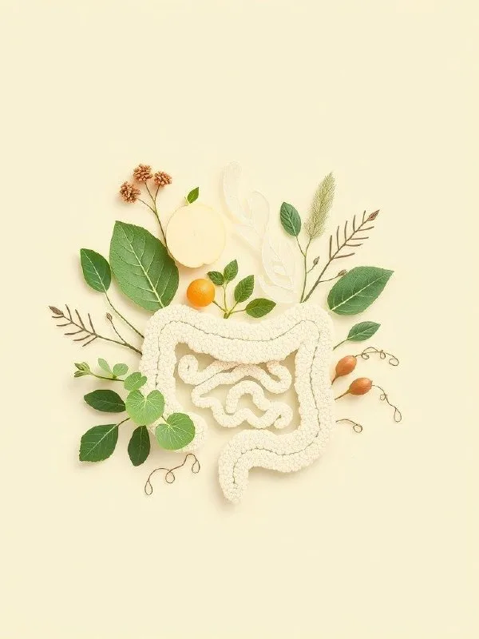

Сегодня расскажу про более суровую героиню - нерастворимую клетчатку.
Ее еще называют «щёткой» для кишечника. Она не растворяется в воде и работает в кишечнике как веник - увеличивает объём стула и помогает ему двигаться дальше. Это особенно полезно, если стул вялый...